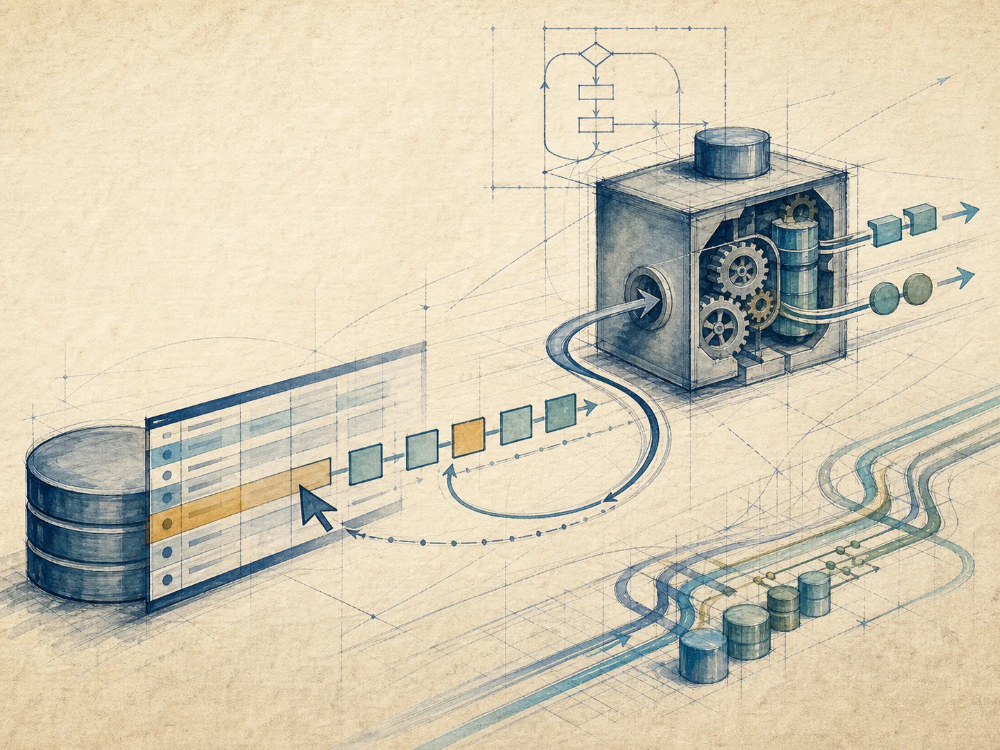
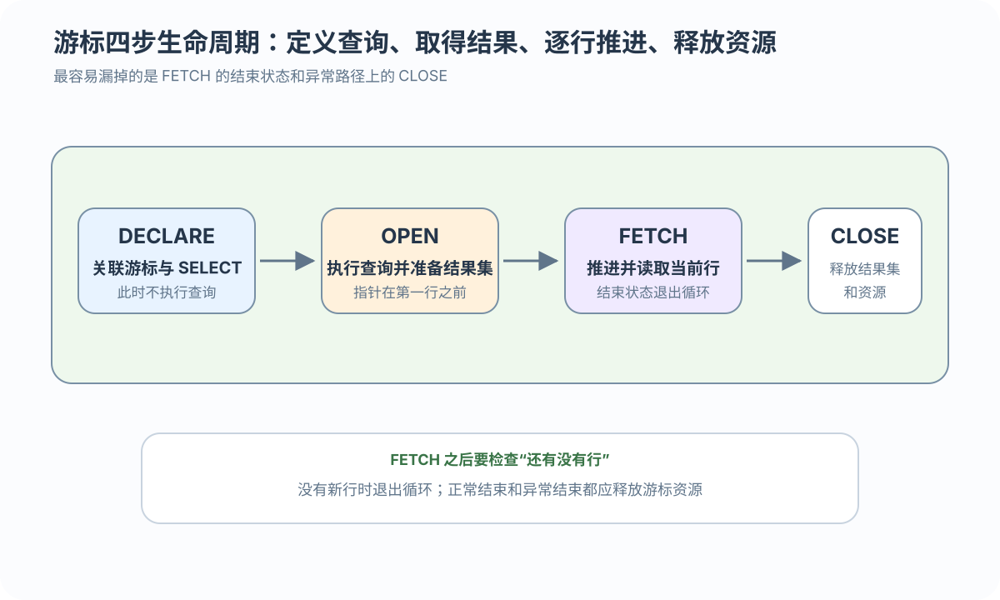
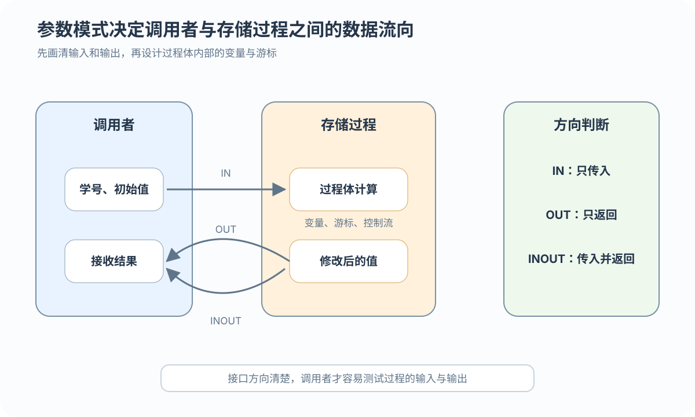

IN
调用者传入初始值

把逐行处理与业务规则封装成可调用的数据库程序对象
 VER. 2608.2
Built with impress.js
VER. 2608.2
Built with impress.js
游标逐行处理可以扩展为存储过程和存储函数的接口设计
只有当每行处理需要状态、分支或逐行动作时才考虑游标
| 处理方式 | 适合任务 | 主要特点 |
|---|---|---|
| 集合 SQL | 聚合、连接、批量更新 | 通常给优化器更多整体优化空间 |
| 游标处理 | 逐行分支和状态累加 | 程序控制更细 |
| 选择原则 | 先判断能否集合化 | 避免不必要的逐行开销 |
不一定。只需 AVG、COUNT 或 GROUP BY 时，集合 SQL 通常更合适
每一步都对应结果集和资源状态的变化

FETCH 之后先检查结束状态；NOT FOUND、SQLSTATE、状态码或异常处理是不同 DBMS 对同一语义的实现方式
目标列、接收变量和循环退出条件要相互匹配
| 设计点 | 需要保证 | 典型风险 |
|---|---|---|
| 目标列 | 与接收变量一一对应 | 类型或顺序不匹配 |
| 指针移动 | 每轮恰好推进一次 | 漏读或重复读 |
| 结束状态 | 结果集为空时退出 | 无限循环 |
| 关闭资源 | 结束和异常都能执行 | 缓冲区泄漏 |
不能。每次 FETCH 后先判断结束状态，确认取得有效行后才能处理接收变量
产品中立的游标循环先取行，再判断结束；只有取得有效行后才能处理变量
01
02
03
04
05
06
07
08
09
10
11
12DECLARE cursor FOR SELECT Credit, Grade ...
OPEN cursor
LOOP
FETCH cursor INTO v_credit, v_grade
IF end_status = NOT FOUND 或等价状态
EXIT
END IF
处理 v_credit、v_grade
END LOOP
CLOSE cursor目标列与接收变量按顺序对应；正常结束和异常退出都必须释放游标资源。这是概念伪代码，不能承诺跨 DBMS 直接运行
游标属于一次调用的临时状态；过程和函数由 DBMS 保存、调用和维护
01
02
03
04
05过程化 SQL 块
→ CREATE PROCEDURE / FUNCTION
→ CALL 或函数表达式调用
→ ALTER / REPLACE
→ DROP| 层次 | 保存什么 | 生命周期 |
|---|---|---|
| 游标 | 结果集位置、当前调用的取数状态 | OPEN → FETCH → CLOSE |
| 过程／函数 | 可调用的程序定义与接口 | CREATE → CALL → ALTER/REPLACE → DROP |
接口越清晰，调用者越容易测试和复用

调用者传入初始值
过程计算并返回结果，调用者提供接收位置
接收初值并返回修改后的值
OUT／INOUT 的调用者变量绑定方式随 DBMS 或调用接口变化；接口仍分别表达返回值和双向传递的数据流
该契约只说明按学分加权的输入、状态和输出，具体脚本仍需按产品语法实现
01
02
03
04IN p_sno → SC JOIN Course → FETCH Credit, Grade
→ point × credit 累加 → OUT p_gpa
GPA = Σ(pointᵢ × creditᵢ) / Σcreditᵢ| 过程阶段 | 数据库端动作 | 对外接口 |
|---|---|---|
| 输入 | 接收学生学号 | IN p_sno |
| 处理 | 读取 Credit, Grade，按顺序 FETCH 到变量 | v_credit, v_grade |
| 判断 | 按分数段计算课程绩点并累计 | 内部状态，不直接返回 |
| 输出 | 汇总并返回 GPA | OUT p_gpa |
例如三门课学分均为 4，成绩 85、96、87 映射为绩点 3、4、3：(3×4 + 4×4 + 3×4) / 12 = 3.33。空集、零学分、NULL、越界成绩和精度必须写入测试契约
多动作、多输出或明显副作用通常选过程；需要在表达式中返回单值时选函数
01
02过程：CALL compGPA(:sno, :out_gpa)
函数：SELECT calcGPA(:sno)| 对象 | 重点 | 调用结果 |
|---|---|---|
| 存储过程 | 执行一组动作 | 输出参数或状态 |
| 存储函数 | 计算并返回值 | 必须声明返回类型 |
| 共同点 | 由 DBMS 管理的程序对象 | 可创建、修改和删除 |
不一定。调用形状只是概念示意；函数能否修改数据、能否出现在查询表达式中，按目标 DBMS 核对
收益取决于工作负载、调用方式、计划行为和实测证据
定义或计划可能被复用；是否更快要用工作负载实测
客户端原本需要多次往返时，封装后可能减少通信
规则可以集中复用，但会增加版本和权限耦合
数据库端程序需要版本、权限、事务和测试管理
| 风险 | 可能后果 | 设计回应 |
|---|---|---|
| 逐行成本 | 大结果集处理变慢 | 优先评估集合 SQL |
| 版本／依赖 | 迁移、升级或对象变更失败 | 锁定目标版本并回归测试 |
| 事务／副作用 | 隐式写入、锁等待或提交行为难见 | 明确读写、事务和审计边界 |
| 权限／测试 | 调用失败，边界错误难复现 | 管理权限并覆盖空集、NULL、异常和大数据量 |
存储程序应清晰封装业务规则，不应把所有 SQL 都改成循环
DECLARE → OPEN → FETCH → NOT FOUND → CLOSE
CREATE → CALL → ALTER/REPLACE → DROP
根据动作或输出值选择接口，按目标 DBMS 核对副作用
JDBC 通过 CallableStatement 调用存储程序，并用应用侧 ResultSet 处理结果；MVC 属于应用层组织方式
AVG、COUNT 或 GROUP BY 的任务，并说明为什么不应默认用游标？FETCH 后为何要先判断结束状态，再处理变量？正常与异常退出时如何关闭资源？IN、OUT、游标目标列、FETCH 变量和零学分策略？OUT 结果由谁接收？过程与函数的调用形状有何不同？如何选择并核对函数副作用？